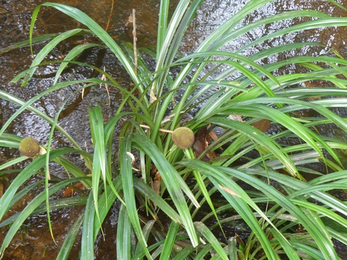

Thurniaceae
(No common name / Palmiet Family)
Thurniaceae is a small family of monocotyledonous flowering plants in the order Poales, comprising only two genera (Thurnia and Prionium) and four species. These robust, perennial herbs are adapted to wet, marshy habitats and exhibit a striking disjunct distribution, with Thurnia found in northern South America and Prionium restricted to South Africa.
Overview
Thurniaceae represents a distinct lineage within the large and diverse Poales order, which includes major families like grasses (Poaceae), sedges (Cyperaceae), and rushes (Juncaceae). The family's two genera are geographically isolated: Thurnia species occur in nutrient-poor, wet savannas and along blackwater rivers in the Guiana Shield region and adjacent Amazonia, while the single species of Prionium (P. serratum, or Palmiet) forms dense stands along rivers and in wetlands in the Cape region of South Africa.
These plants are typically large, rhizomatous herbs. Prionium is particularly notable for developing a thick, woody, persistent trunk covered in old leaf bases, giving it a palm-like appearance, though it is unrelated to true palms. Flowers in the family are small, inconspicuous, wind-pollinated, and densely aggregated into spherical heads.
Economically, the family has limited importance, although Prionium plays a significant ecological role in South African river systems, stabilizing banks and providing habitat. Its stems have been used locally for tanning or fuel. The family's primary significance is botanical, relating to its phylogenetic position and biogeographical pattern.
Quick Facts
- Scientific Name: Thurniaceae
- Common Name: None widely accepted (sometimes Palmiet Family for Prionium)
- Number of Genera: 2 (Thurnia, Prionium)
- Number of Species: 4
- Distribution: Disjunct: Northern South America (Guiana Shield, Amazonia) and South Africa (Cape region).
- Evolutionary Group: Monocots - Commelinids - Poales
Key Characteristics
Growth Form and Habit
Plants are robust, rhizomatous, perennial herbs adapted to aquatic or marshy environments (helophytes). Thurnia species are typically acaulescent (lacking an obvious above-ground stem) with basal leaves. Prionium serratum is unique in developing a thick, woody, unbranched trunk up to 2 meters tall, formed from persistent old leaf bases, giving it a palm-like appearance.
Leaves
Leaves are simple, alternate (arranged basally in Thurnia or spirally along the trunk in Prionium), and linear in shape. They are often long, stiff or somewhat leathery, and possess a sheathing base. A key characteristic, especially prominent in Prionium, is the presence of sharp, saw-like serrations along the leaf margins. Venation is parallel, typical for monocots.
Inflorescence and Flowers
The inflorescence consists of one or more dense, globose (spherical) or ellipsoid heads borne on a long stalk (scape), often subtended by leaf-like bracts. Individual flowers within the heads are small, numerous, inconspicuous, and adapted for wind pollination (anemophily). Flowers are typically bisexual (though sometimes functionally unisexual) and radially symmetrical (actinomorphic).
- Perianth: Composed of 6 small, dry, scale-like or chaffy tepals arranged in two whorls of 3. Usually brownish or translucent (hyaline).
- Androecium: Typically 6 stamens arranged in two whorls, opposite the tepals (sometimes reduced to 3 in Thurnia). Filaments are distinct; anthers are basifixed and open via longitudinal slits.
- Gynoecium: A single superior ovary composed of 3 fused carpels. It can be trilocular (3-chambered) with one ovule per locule, or become effectively unilocular (1-chambered) with 1-3 basal ovules. There are typically 3 distinct styles, which are often long and feathery (plumose) to effectively capture airborne pollen.
Fruits and Seeds
The fruit is typically a loculicidal capsule (splitting along the locule walls) containing 1-3 seeds. In some cases, it might be interpreted as an achene or utricle (a small, dry, indehiscent, single-seeded fruit).
Seeds are small, sometimes with sparse endosperm.
Field Identification
Identifying Thurniaceae relies on recognizing their robust monocot habit, specific habitat, dense flower heads, and distinct leaf features, keeping the unique distribution in mind:
Primary Identification Features
- Habitat: Restricted to wet, marshy areas, riverbanks, or shallow water.
- Geographic Location: Either northern South America (Thurnia) or South Africa (Prionium).
- Robust Monocot Habit: Large, grass-like or sedge-like herbs; Prionium has a distinct woody trunk.
- Linear, Serrated Leaves: Long, strap-like leaves, often with sharp saw-toothed edges. Parallel venation.
- Dense Globose Flower Heads: Flowers tightly packed into spherical or near-spherical heads on stalks.
- Small Flowers with 6 Tepals/6 Stamens: Individual flowers within the head are inconspicuous, with parts typical for Poales (6 tepals, 6 stamens).
- 3 Feathery Styles: Often visible protruding from flowers in the head.
Secondary Identification Features
- Rhizomatous Growth: Spreading via underground stems.
- Sheathing Leaf Bases: Leaves wrap around the stem/rhizome at their base.
- Trunk (Prionium): Thick stem covered in persistent leaf bases.
Seasonal Identification Tips
- Flowering/Fruiting: Dense heads are most conspicuous during the reproductive season.
- Vegetative State: The robust habit, linear serrated leaves, and trunk (in Prionium) are identifiable year-round.
Common Confusion Points
- Cyperaceae (Sedges) & Juncaceae (Rushes): Also common in wet habitats with grass-like leaves and often dense inflorescences. Differ in flower structure (e.g., Cyperaceae flowers subtended by a single bract, Juncaceae often have 6 distinct tepals but different inflorescence types and non-serrated leaves typically). Thurniaceae heads are usually much larger and denser than most rushes/sedges.
- Typhaceae (Cattails): Have dense, cylindrical flower spikes (male above female), very different from the globose heads of Thurniaceae.
- Poaceae (Grasses): Have characteristic flower structures (florets with lemma/palea) arranged in spikelets, very different from Thurniaceae flowers. Leaves have ligules.
- Pandanaceae (Screw Pines) (Prionium only): Might be confused due to the trunk and strap-like leaves, but Pandanaceae have flowers in dense spadices often covered by large bracts, different fruit types, and often prop roots. Leaves usually arranged in distinct spirals.
- Bromeliaceae (Bromeliads): Some terrestrial bromeliads might have serrated leaves, but flower structure and inflorescence type (often brightly colored bracts) are very different.
Field Guide Quick Reference
Look For:
- Robust monocot herb (wet habitats)
- Trunk present (Prionium) or absent (Thurnia)
- Linear leaves, often sharply serrated
- Flowers in dense, globose heads
- Individual flowers small, 6 tepals, 6 stamens
- 3 feathery styles
- Location: N. South America OR South Africa
Key Distinctions:
- vs. Sedges/Rushes: Thurniaceae has large, dense globose heads, often serrated leaves.
- vs. Cattails: Thurniaceae has globose heads, not cylindrical spikes.
- vs. Grasses: Thurniaceae lacks grass spikelet structure.
- vs. Pandans: Thurniaceae (Prionium) lacks prop roots, has different flower/fruit structure.
Notable Examples
With only two genera, the key examples represent each genus:

Thurnia sphaerocephala
(No common name)
A representative species of the genus found in the Guiana Highlands and surrounding lowlands. It is a large, rhizomatous herb with basal, linear leaves and characteristic dense, spherical flower heads borne on tall scapes, growing in wet savannas or along streams.

Prionium serratum
Palmiet
The sole species in its genus, endemic to the Cape region of South Africa. It forms dense stands in rivers and wetlands, characterized by its thick, palm-like trunk covered in old leaf bases, long serrated leaves, and dense, brownish flower heads. It is ecologically important for stabilizing riverbanks.
Phylogeny and Classification
Thurniaceae is classified within the order Poales, a major group within the commelinid clade of monocots. This order is exceptionally diverse and economically important, containing families like Poaceae (grasses), Cyperaceae (sedges), Juncaceae (rushes), Bromeliaceae (bromeliads), and Typhaceae (cattails).
Molecular studies place Thurniaceae as sister to a clade containing Cyperaceae and Juncaceae, or sometimes in a broader clade with other families like Typhaceae and Bromeliaceae. Its exact position highlights the complex relationships among the core families of Poales. The striking morphological differences between Thurnia and Prionium (especially the trunk in the latter), combined with their vast geographical separation, point to a long evolutionary history and significant divergence following the split from their common ancestor.
Position in Plant Phylogeny
- Kingdom: Plantae
- Clade: Angiosperms (Flowering plants)
- Clade: Monocots
- Clade: Commelinids
- Order: Poales
- Family: Thurniaceae
Evolutionary Significance
Thurniaceae is evolutionarily interesting for several reasons:
- Phylogenetic Position: Its placement near the base of the Cyperaceae/Juncaceae clade (or related core Poales groups) provides insights into the early evolution of characteristics within this major monocot order.
- Biogeography: The extreme disjunction between South America and South Africa is a classic example suggesting ancient Gondwanan connections or long-distance dispersal events, making it important for historical biogeography studies.
- Morphological Diversity: The evolution of a woody trunk in Prionium from a presumably herbaceous ancestor shared with Thurnia demonstrates significant morphological plasticity within a small family.
- Adaptation to Wet Habitats: Represents a specialized lineage adapted to aquatic and marsh environments within the Poales.